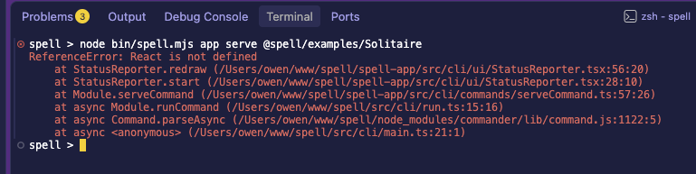

Owen's test run, 2026-10-22 20:38: V4 failed.

Found and fixed in the repo-split worktree. It's uncommitted, with the CI fixes.
React is not defined.
spell app serve, lint, compile, parse and
speedtest all do.
spell command runs every repo's code through tsx, with the kit's node settings.
tsx applies a settings file only to the files that settings file lists.React variable.
tsx,
tsconfig.tsx.json. It's the kit's node settings, over every repo's files, and the spell bin now hands it to
tsx.
spell lint @spell/examples/fizzbuzz now draws its spinner and ticks, and
exits 0.
kit:ts and kit:lint are clean.kit:test: 705 passed, 39 skipped.readme:check: 35 pages clean.